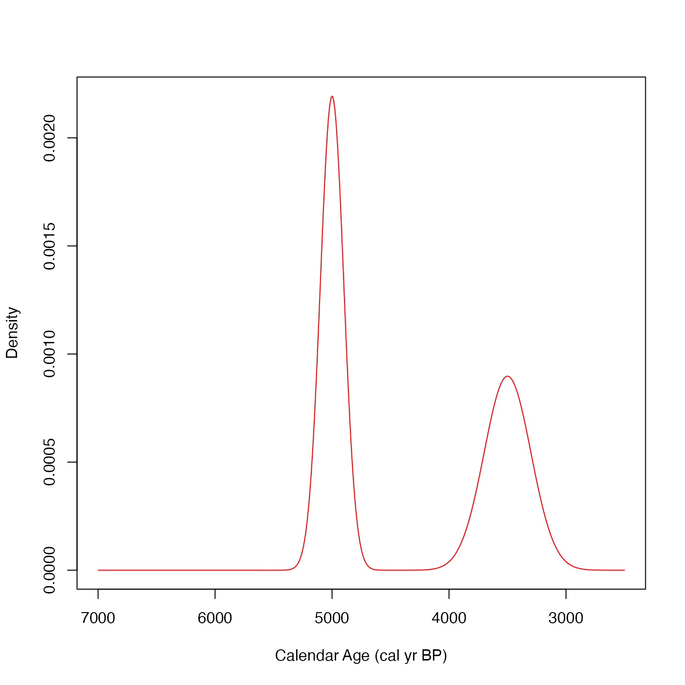

50 simulated radiocarbon determinations for which the underlying calendar ages are
drawn from a mixture of two normals:
$$f(\theta) = 0.45 N(3500, 200^2) + 0.55 N(5000, 100^2) $$
i.e., a mixture of a normal centred around 3500 cal yr BP; and another
(slightly more concentrated/narrower) normal centred around 5000 cal yr BP.
The corresponding 50 radiocarbon ages were then simulated using the IntCal20 calibration curve
incorporating both the uncertainty in the calibration curve and a hypothetical measurement
uncertainty:
$$X_i | \theta_i \sim N(m(\theta_i), \rho(\theta_i)^2 + \sigma_{i,\textrm{lab}}^2),$$
where \(m(\theta_i)\) and \(\rho(\theta_i)\) are the IntCal20 pointwise
means and uncertainties; and \(\sigma_{i,\textrm{lab}}\), the simulated
laboratory measurement uncertainty, was fixed at a common value of 25 \({}^{14}\)C yrs.
This dataset is included simply to give some quick-to-run examples.
Format
two_normals
A data frame with 50 rows and 4 columns:
- c14_age
The simulated \({}^{14}\)C age (in \({}^{14}\)C yr BP)
- c14_sig
The (fixed) \({}^{14}\)C age measurement uncertainty used in the simulation (set at 25 \({}^{14}\)C yrs)
- f14c
The corresponding simulated values of F\({}^{14}\)C concentration
- f14c_sig
The (fixed) corresponding F\({}^{14}\)C measurement uncertainty used in the simulation
Examples
# Plotting calendar age density underlying two_normals
# Useful for comparisons against estimation techniques
weights_true <- c(0.45, 0.55)
cluster_means_true_calBP <- c(3500, 5000)
cluster_precisions_true <- 1 / c(200, 100)^2
# Create mixture density
truedens <- function(t, w, truemean, trueprec) {
dens <- 0
for(i in 1:length(w)) {
dens <- dens + w[i] * dnorm(t, mean = truemean[i], sd = 1/sqrt(trueprec[i]))
}
dens
}
# Visualise mixture
curve(truedens(
x,
w = weights_true,
truemean = cluster_means_true_calBP,
trueprec = cluster_precisions_true),
from = 2500, to = 7000, n = 401,
xlim = c(7000, 2500),
xlab = "Calendar Age (cal yr BP)",
ylab = "Density",
col = "red"
)
